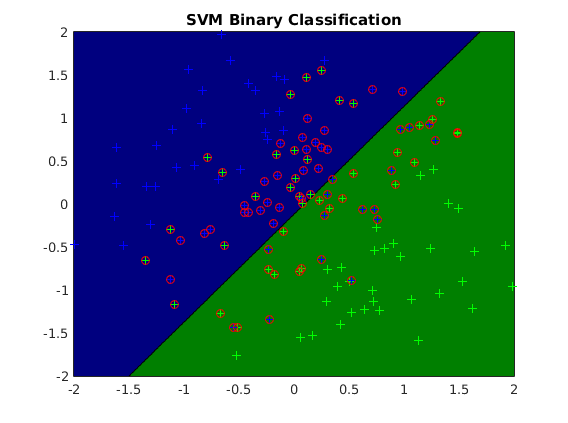
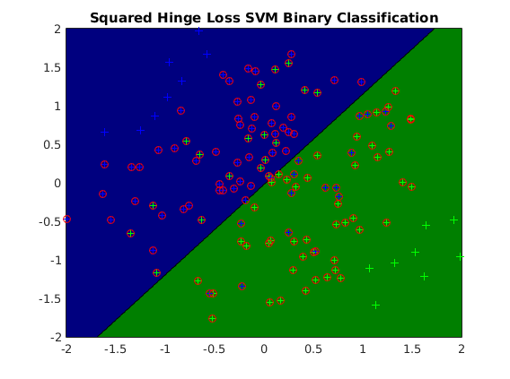
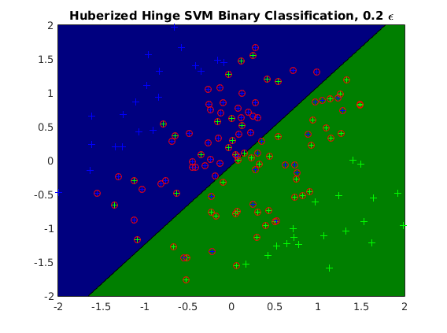
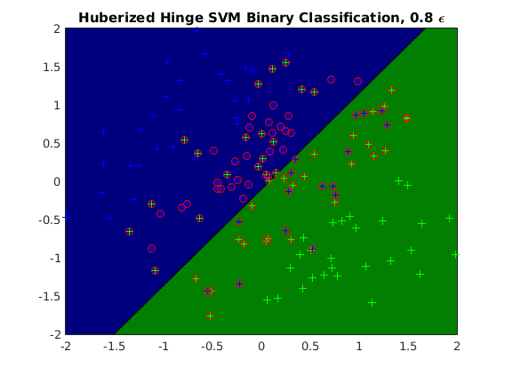

Contents
Description of demo_binaryclass_SVM.m
Demonstrates use of Support Vector Machines for binary classification with various loss functions. Support vectors are circled in red in plots below.
clear all close all generateData_slanted
usage of SVM binary classification
options_svm1 = []; options_svm1.lambdaL2 = 0; options_svm1.addBias = 1; model_svm1 = ml_binaryclass_SVM(Xtrain, ytrain, options_svm1); yhat_svm1 = model_svm1.predict(model_svm1, Xtest); testError_svm1 = mean(yhat_svm1 ~= ytest); fprintf('Averaged misclassification test error with %s is: %.3f\n', ... model_svm1.name, testError_svm1); XtrainwBias = [ones(size(Xtrain, 1), 1), Xtrain]; figure; plot2DClassifier(Xtrain, ytrain, model_svm1); hold on; indx = 1-ytrain.*(XtrainwBias*model_svm1.w) >= 0; plot(Xtrain(indx,1),Xtrain(indx,2),'o','color','r');
Averaged misclassification test error with SVM Binary Classification is: 0.080
usage of SSVM binary classification
options_svm2 = []; options_svm2.lambdaL2 = 0; options_svm2.addBias = 1; model_svm2 = ml_binaryclass_SSVM(Xtrain, ytrain, options_svm2); yhat_svm2 = model_svm2.predict(model_svm2, Xtest); testError_svm2 = mean(yhat_svm2 ~= ytest); fprintf('Averaged misclassification test error with %s is: %.3f\n', ... model_svm2.name, testError_svm2); figure; plot2DClassifier(Xtrain, ytrain, model_svm2); hold on; indx = 1-ytrain.*(XtrainwBias*model_svm2.w) >= 0; plot(Xtrain(indx,1),Xtrain(indx,2),'o','color','r');
Averaged misclassification test error with Squared Hinge Loss SVM Binary Classification is: 0.044
usage of HSVM binary classification with 0.2 epsilon
options_svm3 = []; options_svm3.lambdaL2 = 0; options_svm3.epsilon = 0.2; options_svm3.addBias = 1; model_svm3 = ml_binaryclass_HSVM(Xtrain, ytrain, options_svm3); yhat_svm3 = model_svm3.predict(model_svm3, Xtest); testError_svm3 = mean(yhat_svm3 ~= ytest); fprintf('Averaged misclassification test error with %s is: %.3f\n', ... model_svm3.name, testError_svm3); figure; plot2DClassifier(Xtrain, ytrain, model_svm3); hold on; indx = 1-ytrain.*(XtrainwBias*model_svm3.w) >= 0; plot(Xtrain(indx,1),Xtrain(indx,2),'o','color','r');
Averaged misclassification test error with Huberized Hinge SVM Binary Classification, 0.2 \epsilon is: 0.058
usage of HSVM binary classification with 0.8 epsilon
options_svm4 = []; options_svm4.lambdaL2 = 0; options_svm4.epsilon = 0.8; options_svm4.addBias = 1; model_svm4 = ml_binaryclass_HSVM(Xtrain, ytrain, options_svm4); yhat_svm4 = model_svm4.predict(model_svm4, Xtest); testError_svm4 = mean(yhat_svm4 ~= ytest); fprintf('Averaged misclassification test error with %s is: %.3f\n', ... model_svm4.name, testError_svm4); figure; plot2DClassifier(Xtrain, ytrain, model_svm4); hold on; indx = 1-ytrain.*(XtrainwBias*model_svm4.w) >= 0; plot(Xtrain(indx,1),Xtrain(indx,2),'o','color','r');
Averaged misclassification test error with Huberized Hinge SVM Binary Classification, 0.8 \epsilon is: 0.071